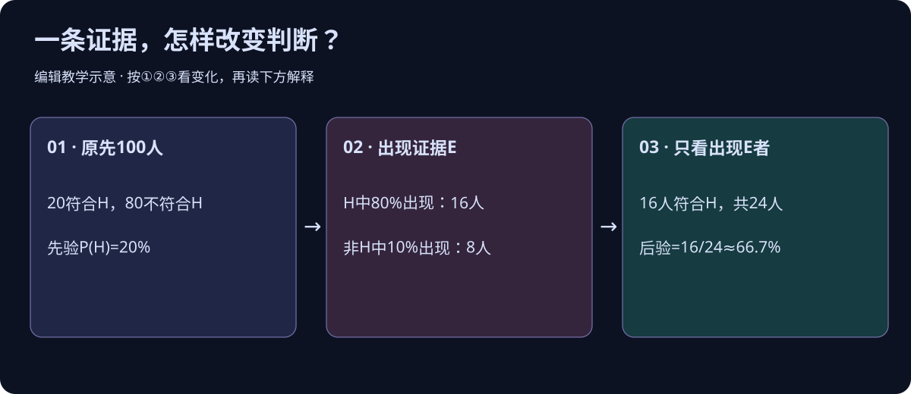

第14章 · 反事实与贝叶斯判断
本章开篇生活情境与衔接为编辑教学改写，借鉴原视频从经历引出概念的讲解方法，不是作者原话；原视频线索与论文见下方对应段落。
先看一件具体的事
如果当时换一个选择，就一定更好吗？

一条证据，怎样改变判断？ · 点击可放大先看这个场景
你走了现在这条路，遇到一些困难，就开始想：如果当时选了另一座城市、另一份工作，会不会一切都更好？眼前这条路有具体的麻烦，没走过的那条却可以被想象得很完整。两边看起来在比较，手里的证据其实并不对称。
问题出在哪里
反事实问题研究的正是“如果做了另一种选择”。难处在于，同一个对象在同一个时刻，我们通常只能看到实际选择对应的结果。另一种选择的结果不会也跑一遍、自动存到数据库里。缺少的不是一行随手可以补上的答案。
模型怎样处理
推荐系统把这种困难放大了：旧策略给用户展示过的视频才有点击记录。没展示的内容，不等于用户不喜欢，而是没有观测。如果某些内容还有机会被展示，可以在假设成立时用倾向概率做加权纠偏；若机会从来是零，记录里就没有对应支持，不能靠除一个零凭空造证据。
再看一个变化
另一个常见困惑是：一个人对你很温和，这说明他特别在意你吗？贝叶斯思路让我们同时比较解释。如果“特别在意”和“本来对所有人都温和”两种情况下，都很容易出现这份温和，那么这份证据区分两种解释的能力就有限。
放回完整流程
先验是看到这条新证据前的判断，似然是在不同假设下出现这条证据的可能性，后验是结合之后的判断。不是遇到一个让人心动的片段，就把所有原来的不确定性清零；也不是把同一条旧消息反复想十遍，就获得了十份独立证据。
回到开头
反事实提醒我们承认未观测的结果，贝叶斯提醒我们按证据更新已有判断。它们都不要求你放弃想象，而是要求把想象和观测分开。接下来用一个小概率例子，看看一条证据到底能把判断推多远。
这一章怎么读先带着上面的问题往下看。每个概念先用白话接上情境，再给计算；遇到公式可以先看旁边的例子。动手实验和答案直接展开，论文留在相应概念后，想追根究底时再点开。
先动手试一试 → 14.1 带着问题进入模型
训练数据与检索结果都只覆盖观测到的一部分。反事实和贝叶斯帮助我们检查缺失的结果，以及已有证据能支持多强的判断。
14.2 反事实、选择偏差与支持覆盖
实际走过的路有记录，没走的路没有另一份完整结局。下面的潜在结果与倾向加权，是在说明可以比较什么、还缺什么条件，不是在给遗憾自动补上一个确定答案。
同一个体在同一时刻只观测到所选行动的结果，未选行动的结果是反事实。推荐系统只有展示过的项目才得到点击反馈；未展示不等于用户不喜欢。
把刚才的直觉一步步算出来
同一个体在同一时刻只观测到所选行动的结果，未选行动的结果是反事实。推荐系统只有展示过的项目才得到点击反馈；未展示不等于用户不喜欢。
逆倾向加权用历史展示概率的倒数修正某些选择偏差，但它需要展示概率可识别、目标行动在历史策略下有正概率等条件。若从未展示某行动，仅靠加权无法变出观测。
换你试一次：先猜，再算
一次点击来自展示概率0.2的项目，另一次来自展示概率0.8的项目。两次点击的逆倾向权重分别是多少？若概率为0怎么办？
参考答案与计算结果
权重分别是5和1.25；展示概率0时没有有限权重。极小概率还会产生高方差，通常需要额外估计或限制。
这个类比帮到哪里，停在哪里
人生未选道路无法直接重复实验；这个概念说明证据缺口，不能证明现在的道路必然最佳。
关联视频 · 已取得完整音轨并完成本机自动转写；本节综合转写与页面摘要改写，术语和个别片段尚未逐秒校对。
14.3 贝叶斯：用新证据更新判断
一份温和既可能来自特别关心，也可能来自一贯礼貌。下面比较的是“这份证据在两种解释下各有多常见”，而不仅是“我有多希望其中一种解释成立”。
后验与似然乘先验成正比，再做归一化。新证据能改变判断，但改变多少取决于先验、似然与建模假设。
把刚才的直觉一步步算出来
后验与似然乘先验成正比，再做归一化。新证据能改变判断，但改变多少取决于先验、似然与建模假设。
在LLM主线之后阅读，用于练习区分概率、学习目标和行为结果。
依次解释先验、似然和后验，再比较“某人特别关心你”与“他对所有人都温和”两个可能解释。视频强调同一份旧证据反复回想不等于新增证据；观测停止后不能用想象冒充概率更新。
换你试一次：先猜，再算
先验P(H)=0.2，证据似然P(E|H)=0.8，P(E|非H)=0.1，后验是多少？
参考答案与计算结果
0.8×0.2/(0.8×0.2+0.1×0.8)=2/3。后验取决于所有这些假设，不是只看支持证据。
这个类比帮到哪里，停在哪里
没有观测时后验保持先验，是给定模型的更新规则；不能据此解释所有执念或关系。
关联视频 · 已取得完整音轨并完成本机自动转写；本节综合转写与页面摘要改写，术语和个别片段尚未逐秒校对。
动手看看：只改一个条件，会发生什么？
改变证据在不同假设下出现的概率，看后验怎样变。重点不是把概率推到你想要的答案，而是看证据真的有多大区分力；再强烈的期待也不能代替新的观测。
想亲手复现，就运行这段小实验
本例是编辑编写的教学计算，不是作者实验的代码复刻。先把 common.py 与本章脚本下载到同一个目录，再执行 python3 14_bayes_causal.py。只使用Python标准库。
prior=.2; lik_h=.8; lik_not=.1
posterior=lik_h*prior/(lik_h*prior+lik_not*(1-prior))
print('posterior:',round(posterior,6))
for propensity in [.2,.8,0.]:
print('propensity:',propensity,'IPS weight:',1/propensity if propensity else 'undefined')
# Identical evidence is not an independent second observation.
print('one observation posterior remains:',round(posterior,6))
实际运行输出
posterior: 0.666667
propensity: 0.2 IPS weight: 5.0
propensity: 0.8 IPS weight: 1.25
propensity: 0.0 IPS weight: undefined
one observation posterior remains: 0.666667
先不急着读完每一行代码。找到输入、这次改变的量和最后输出，按上面的例子预测一次，再运行核对。若结果和直觉不同，打印中间值，看看差异从哪一步开始。
回到开头，你能解释了吗？
没被展示的视频没有点击，和展示后用户不点击，是同一类记录吗？
如果两个假设都容易产生同一条证据，这条证据的区分力大吗？
用自己的话讲给一个没读过这一章的人听。能把问题、过程和结果接起来，再看公式就会容易一些。